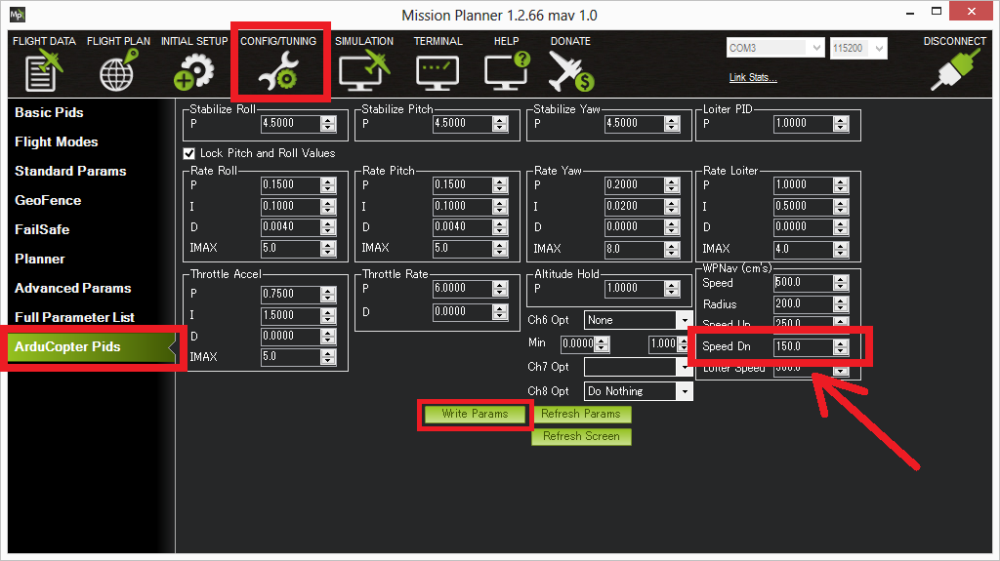
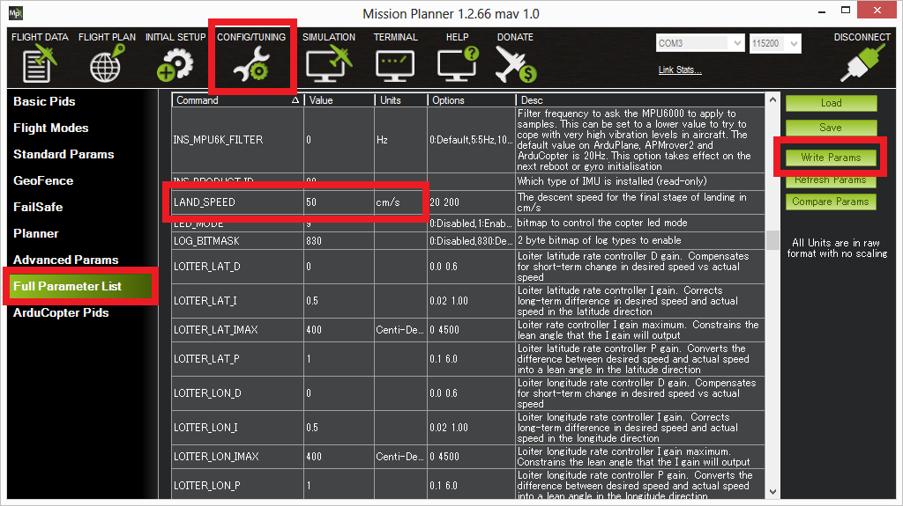

Land Mode¶
LAND Mode attempts to bring the copter straight down and has these features:
descends to 10m (or until the sonar senses something below the copter) using the regular Altitude Hold controller which will descend at the speed held in the WPNAV_SPEED_DN parameter which can be modified on the Mission Planner’s Config/Tuning > Copter Pids screen.
below 10m the copter should descend at the rate specified in the LAND_SPEED parameter which defaults to 50cm/s.
Upon reaching the ground the copter will automatically shut-down the motors and disarm the copter if the pilot’s throttle is at minimum.
{kind=link}
{kind=link}
Note
Copter will recognise that it has landed if the motors are being commanded to be at low level by the vertical position controller, its climb rate remains between -20cm/s and +20cm/s, and is not accelerating for one second. It does not use the altitude to decide whether to shut off the motors except that the copter must also be below 10m above the home altitude, unless a rangefinder is being used, in which case it must be within 2m of the ground.
Note
For Traditional Heli, the low motor check in the above landing detection algorithm is replaced with a check that Collective output is below mid-position (controlled by the vertical position controller, ie in descent). The rotor still may be at governor speed up until Motor Interlock is removed and disarming occurs.
Note
Using a Weight on Wheels (WoW) switch will increase the descent rate and accelerometer ranges that are acceptable for landing detection. This feature is enabled anytime the LGR_WOW_PIN is not disabled.
If the copter appears to bounce or balloon back up a couple of times before settling down and turning the props off, try lowering the LAND_SPEED parameter a bit.
If the vehicle has GPS lock the landing controller will attempt to control its horizontal position but the pilot can adjust the target horizontal position just as in Loiter mode.
If the vehicle does not have GPS lock the horizontal control will be as in stabilize mode so the pilot can control the roll and pitch lean angle of the copter.
Warning
In any Alt Hold based mode including: Alt Hold, Loiter, Auto, AutoLand or RTL if your copters operation becomes erratic when you are close to the ground or landing (and also if any auto landing procedure results in bouncing or failure to turn off motors properly after landing) you probably have the autopilot situated such that its barometer (altimeter) is being affected by the pressure created by the copters prop-wash against the ground.
This is easily verified by looking at the Altimeter reading in your logs and seeing if it spikes or oscillates when near the ground.
If this is a problem, move the autopilot out of prop wash effect or shield it with an appropriately ventilated enclosure.
Success can be verified by flight test and by log results.